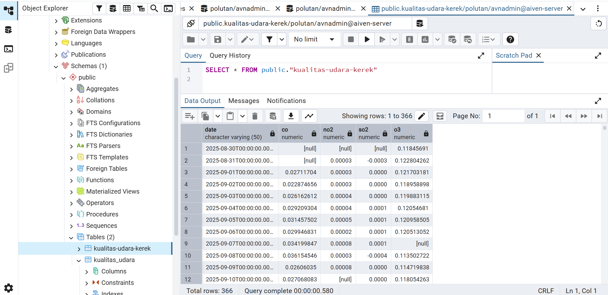
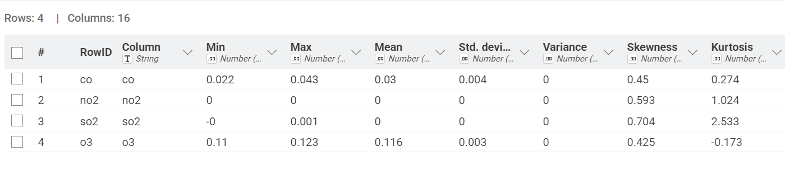
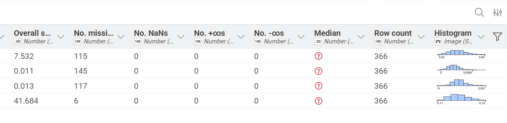

Eksplorasi Data: Integrasi Data menggunakan Aiven Cloud PostgreSQL, pgAdmin, dan Knime#
Pada tugas ini memuat dokumentasi panduan langkah untuk manajemen analisis data kualitas udara di Kabupaten Tuban (khususnya wilayah Kerek).
1. Pembuatan Akun dan Layanan PostgreSQL di Aiven#
Langkah awal untuk menyediakan server database berbasis cloud yang dapat diakses dari mana saja.
Buka situs Aiven Console lalu buat akun baru atau masuk (login) menggunakan kredensial Anda
Pada halaman beranda konsol, klik tombol Create service
Pilih layanan database PostgreSQL
Pilih penyedia cloud (misalnya DigitalOcean, AWS, atau Google Cloud) serta pilih region server yang terdekat
Pilih paket layanan (bisa menggunakan paket Free tier atau Startup yang tersedia)
Beri nama layanan, lalu klik Create service
Tunggu beberapa saat hingga status layanan berubah menjadi Running
2. Pengambilan Kredensial dan Sertifikat SSL Aiven#
Sebelum menghubungkan database ke pgAdmin, Anda memerlukan informasi koneksi serta sertifikat keamanan.
Masuk ke halaman Overview dari layanan PostgreSQL yang baru saja Anda buat di Aiven
Cari bagian Connection information:
Simpan semua informasi ini untuk mengkoneksikan ke pgadmin

3. Menghubungkan Aiven PostgreSQL ke pgAdmin#
Menghubungkan aplikasi manajemen basis data lokal (pgAdmin) ke server cloud Aiven
Buka aplikasi pgAdmin
Klik kanan pada folder Servers di panel kiri, pilih Create > Server…
Pada tab General, isi nama server (misal: Aiven Postgres)
Berikut tampilan ketika sudah berhasil terkoneksi dengan server aiven

4. Import File CSV Kualitas Udara Ke PostgreSQL#
Di panel kiri pgAdmin, arahkan ke database Anda > Schemas > public > Tables
Klik kanan pada tabel kualitas_udara, lalu pilih Import/Export Data…
Pada tab General:
Atur toggle Import/Export menjadi Import
Pilih file
KualitasUdaraKerek.csvpada bagian FilenameAtur Format ke csv dan pastikan Header diatur ke Yes
Berikut tampilan ketika data sudah berhasil di import ke pgAdmin:

5. Integrasi Data Menggunakan Knime#
Menghubungkan data dari Aiven PostgreSQL ke KNIME Analytics Platform untuk pengolahan lebih lanjut. Konfigurasikan Host, Port, Database name, User, dan Password yang disesuaikan dengan kredensial Aiven.
Berikut nodes - nodes yang digunakan:

6. Penjelasan, Rumus, dan Contoh Perhitungan dari Seluruh Fitur pada Nodes Statistik#
Pada implementasi knime, kolom yang digunakan adalah CO dan O3, berikut hasil dari statistiknya


1. Column#
Pada fitur Column berisi nama kolom yaitu sebagai polutan apa saja yang ada pada data, pada data tersebut terdapat CO dan O3.
2. Min#
Pada fitur min berisi nilai minimal dari data pada setiap kolom, untuk nilai min dari pada CO dan O3 sebagai berikut:
CO = 0.0216
O3 = 0.1095
3. Max#
Pada fitur max berisi nilai maximal dari data pada setiap kolom, untuk nilai max dari pada CO dan O3 sebagai berikut:
CO = 0.0427
O3 = 0.1234
4. Mean#
Pada fitur mean berisi nilai rata-rata keseluruhan dari data valid, dihitung dengan menjumlahkan seluruh nilai data lalu dibagi dengan jumlah data valid (\(n\)).
Rumus Mean:
Contoh perhitungan:
Sehingga pada kolom CO dan O3 diperoleh mean:
CO = 0.0300
O3 = 0.1158
5. Standard Deviasi#
Standard Deviasi digunakan untuk mengetahui seberapa jauh sebaran angka - angka di dalam dataset dari nilai rata - rata. Jika nilai standard deviasi kecil artinya data-data berkumpul rapat disekitar nilai rata-rata, tetapi jika nilai standard deviasi besar artinya data menyebar sangat luas dan jauh dari rata - rata.
Rumus Standard Deviasi:
Berikut adalah rumus standard deviasi sample:
Keterangan:
\(s\) = Standar deviasi sampel
\(x_i\) = Nilai data ke-\(i\)
\(\bar{x}\) = Nilai rata-rata (mean)
\(n\) = Jumlah total data valid (count)
Berikut adalah rumus standard deviasi populasi:
Keterangan:
\(\sigma\) = Standar deviasi populasi
\(x_i\) = Nilai data ke-\(i\)
\(\mu\) = Nilai rata-rata populasi (population mean)
\(N\) = Jumlah total keseluruhan data populasi
Contoh perhitungan:
Pada perhitungan ini dicontohkan untuk standard deviasi populasi, karena pada kolom CO terdapat missing value sebanyak 115, maka untuk \(N\) pembagi menjadi \(366 - 115 = 251\)
Sehingga pada kolom CO dan O3 diperoleh standard deviasi:
CO = 0.0036500 (sampel) / 0.0036427 (populasi)
O3 = 0.0025488 (sampel) / 0.0025453 (populasi)
6. Variansi#
Pada fitur variansi ini merupakan ukuran penyebaran statistik yang mengukur seberapa jauh setiap angka dalam kumpulan data tersebar dari nilai rata-ratanya. Hubungannya dengan standard deviasi adalah variansi merupakan kuadrat dari standard deviasi (\(\text{Varians} = s^2\) atau \(\sigma^2\)).
Rumus variansi:
Contoh Perhitungan:
Untuk perhitungan pada variansi cukup dengan mengkuadratkan standard deviasi, yaitu sebagai berikut untuk contoh perhitungan variansi populasi pada CO:
Sehingga pada kolom CO dan O3 diperoleh variansi:
CO = 1.33E-05
O3 = 6.48E-06
7. Skewness#
Skewness merupakan bentuk penyebaran data apakah simetris atau tidak simetris (miring) terhadap nilai rata - ratanya.
Skewness Positif (Right Skewed) : Nilainya > 0
Skewness Negatif (Left Skewed) : Nilainya < 0
Simetris : Nilainya mendekati 0
Rumus skewness:
Sehingga pada kolom CO dan O3 diperoleh skewness:
CO = 0.450
O3 = 0.425
8. Kurtosis#
Kurtosis adalah ukuran statistik yang mendeskripsikan seberapa runcing atau landai puncak suatu distribusi data dibandingkan dengan distribusi normal standar.
Rumus Kurtosis:
Sehingga pada kolom CO dan O3 diperoleh excess kurtosis:
CO = 0.274
O3 = -0.173
9. Overall Sum#
Overall sum adalah jumlah total keseluruhan dari seluruh nilai data valid yang terdapat pada suatu kolom atau fitur tertentu.
Rumus Overall Sum:
Sehingga pada kolom CO dan O3 diperoleh overall sum:
CO = 7.532
O3 = 41.684
10. No Missing Value#
Jumlah baris data yang kosong, tidak tercatat, atau bernilai null pada suatu kolom.
Rumus: $\(\text{Missing Values} = N_{\text{total}} - n\)$
Sehingga pada kolom CO dan O3 diperoleh jumlah missing values:
CO = 115
O3 = 6
11. No Nans#
Jumlah baris data yang bernilai Not a Number (NaN).
Sehingga pada kolom CO dan O3 diperoleh jumlah NaNs:
CO = 0
O3 = 0
12. No. +∞s (Positive Infinity)#
Jumlah baris data yang bernilai tak terhingga positif (\(+\infty\)).
Sehingga pada kolom CO dan O3 diperoleh jumlah +∞s:
CO = 0
O3 = 0
13. No. -∞s (Negative Infinity)#
Jumlah baris data yang bernilai tak terhingga negatif (\(-\infty\)).
Sehingga pada kolom CO dan O3 diperoleh jumlah -∞s:
CO = 0
O3 = 0
14. Median#
Nilai tengah dari sekumpulan data valid yang telah diurutkan dari terkecil hingga terbesar.
Sehingga pada kolom CO dan O3 diperoleh nilai median:
CO = 0.0297
O3 = 0.1155
15. Row Count#
Jumlah total baris yang terdapat di dalam suatu kolom (data valid ditambah missing values).
Sehingga pada kolom CO dan O3 diperoleh total row count:
CO = 366
O3 = 366